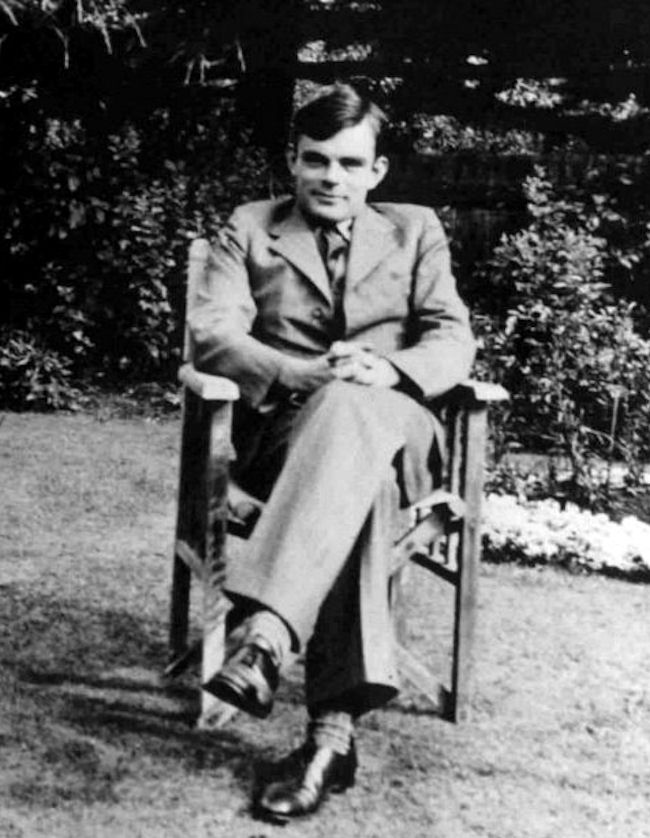

Alan Mathison Turing OBE,[2] FRS[3] [ˈælən ˈmæθɪsən ˈtjʊəɹɪŋ] (* 23. Juni 1912 in London; † 7. Juni 1954 in Wilmslow, Cheshire) war ein britischer Logiker, Mathematiker, Kryptoanalytiker, Philosoph und Informatiker. Er gilt heute als einer der einflussreichsten Theoretiker der frühen Computerentwicklung und Informatik . Turing schuf einen großen Teil der theoretischen Grundlagen für die moderne Informations-und Computertechnologie. Als richtungsweisend erwiesen sich auch seine Beiträge zur theoretischen Biologie.
Das von ihm entwickelte Berechenbarkeitsmodell derTuringmaschine bildet eines der Fundamente der theoretischen Informatik. Während des Zweiten Weltkrieges war er maßgeblich an der Entzifferung der mit der deutschen Rotor-Chiffriermaschine Enigma verschlüsselten deutschen Funksprüche beteiligt. Der Großteil seiner Arbeiten blieb auch nach Kriegsende unter Verschluss.
Turing entwickelte 1953 eines der ersten Schachprogramme, dessen Berechnungen er mangels Hardware selbst vornahm. Nach ihm benannt sind der Turing Award, die bedeutendste Auszeichnung in der Informatik, sowie der Turing-Test zum Überprüfen des Vorhandenseins von künstlicher Intelligenz.[4]
Im März 1952 wurde Turing wegen seiner Homosexualität, die damals noch als Straftat verfolgt wurde, zur chemischen Kastration verurteilt.[5][6] Turing erkrankte in Folge der Hormonbehandlung an einer Depression und starb etwa zwei Jahre später vermutlich durch Suizid.
Im Jahr 2009 sprach der britische Premierminister Gordon Brown eine offizielle Entschuldigung im Namen der Regierung für die „entsetzliche Behandlung“ Turings aus und würdigte dessen „außerordentliche Verdienste“ während des Krieges. Noch 2011 wurde eine Begnadigung trotz einer Petition abgelehnt. 2013, am Weihnachtsabend, sprach Königin Elisabeth II. postum ein „Royal Pardon“ (Königliche Begnadigung) aus.[7][8][9][10]
Alan Turings Vater, Julius Mathison Turing, war britischer Beamter beim Indian Civil Service. Er und seine Frau Ethel Sara Turing (geborene Stoney) wünschten, dass ihre Kinder in Großbritannien aufwüchsen.[11] Deshalb kehrte die Familie vor Alans Geburt aus Chhatrapur, damals Britisch-Indien, nach London-Paddington zurück, wo Alan Turing am 23. Juni 1912 zur Welt kam. Da der Staatsdienst seines Vaters noch nicht beendet war, reiste dieser im Frühjahr 1913 erneut nach Indien, wohin ihm seine Ehefrau im Herbst folgte. Turing und sein älterer Bruder John wurden nach St Leonards-on-the-Sea, Hastings, in die Familie eines pensionierten Obersten und dessen Frau in Pflege gegeben. In der Folgezeit pendelten die Eltern zwischen England und Indien, bis sich Turings Mutter 1916 entschied, längere Zeit in England zu bleiben, und die Söhne wieder zu sich nahm.
Schon in früher Kindheit zeigte sich die hohe Begabung und Intelligenz Turings. Es wird berichtet, dass er sich innerhalb von drei Wochen selbst das Lesen beibrachte und sich schon früh zu Zahlen und Rätseln hingezogen fühlte.[11]
Im Alter von sechs Jahren wurde Turing auf die private Tagesschule St Michael’s in St Leonards-on-the-Sea geschickt, wo die Schulleiterin frühzeitig seine Begabung bemerkte. 1926, im Alter von vierzehn Jahren, wechselte er auf die Sherborne School in Dorset. Sein erster Schultag dort fiel auf einen Generalstreik in England. Turing war jedoch so motiviert, dass er die 100 Kilometer von Southampton zur Schule allein auf dem Fahrrad zurücklegte und dabei nur einmal in der Nacht an einer Gaststätte Halt machte; so berichtete jedenfalls die Lokalpresse.
Turings Drang zur Naturwissenschaft traf bei seinen Lehrern in Sherborne auf wenig Gegenliebe; sie setzten eher auf Geistes- als auf Naturwissenschaften. Trotzdem zeigte Turing auch weiterhin bemerkenswerte Fähigkeiten in den von ihm geliebten Bereichen. So löste er für sein Alter fortgeschrittene Aufgabenstellungen, ohne zuvor irgendwelche Kenntnisse der elementaren Infinitesimalrechnung erworben zu haben.
Im Jahr 1928 stieß Turing auf die Arbeiten Albert Einsteins. Er verstand sie nicht nur, sondern entnahm einem Text selbständig Newtons Bewegungsgesetz, obwohl dieses nicht explizit erwähnt wurde.
Turings Widerstreben, für Geisteswissenschaften genauso hart wie für Naturwissenschaften zu arbeiten, hatte zur Folge, dass er einige Male durch die Prüfungen fiel. Weil dies seinen Notendurchschnitt verschlechterte, musste er 1931 auf ein College zweiter Wahl gehen, das King’s College, Cambridge, entgegen seinem Wunsch, am Trinity College zu studieren. Er studierte von 1931 bis 1934 unter Godfrey Harold Hardy (1877–1947), einem renommierten Mathematiker, der den Sadleirian Chair in Cambridge innehatte, das zu der Zeit ein Zentrum der mathematischen Forschung war.
In seiner für diesen Zweig der Mathematik grundlegenden Arbeit On Computable Numbers, with an Application to the “Entscheidungsproblem” (28. Mai 1936) formulierte Turing die Ergebnisse Kurt Gödels von 1931 neu. Er ersetzte dabei Gödels universelle, arithmetisch-basierte formale Sprache durch einen einfachen gedanklichen Mechanismus, eine abstrakt-formale Zeichenketten verarbeitende mathematische Maschine, die heute unter dem Namen Turingmaschine bekannt ist. („Entscheidungsproblem“ verweist auf eines der 23 wichtigsten offenen Probleme der Mathematik des 20. Jahrhunderts, vorgestellt von David Hilbert 1900 auf dem 2. Internationalen Mathematiker-Kongress in Paris [„Hilbertsche Probleme“].) Turing bewies, dass solch ein Gerät in der Lage ist, „jedes vorstellbare mathematische Problem zu lösen, sofern dieses auch durch einen Algorithmus gelöst werden kann“.
Turingmaschinen sind bis zum heutigen Tag einer der Schwerpunkte der theoretischen Informatik, nämlich der Berechenbarkeitstheorie. Mit Hilfe der Turingmaschine gelang Turing der Beweis, dass es keine Lösung für das „Entscheidungsproblem“ gibt. Er zeigte, dass die Mathematik in gewissem Sinne unvollständig ist, weil es allgemein keine Möglichkeit gibt, festzustellen, ob eine beliebige, syntaktisch korrekt gebildete mathematische Aussage beweisbar oder widerlegbar ist. Dazu bewies er, dass das Halteproblem für Turingmaschinen nicht lösbar ist, d. h., dass es nicht möglich ist, algorithmisch zu entscheiden, ob eine Turingmaschine, angesetzt auf eine Eingabe (initiale Bandbelegung), jemals zum Stillstand kommen wird, das heißt die Berechnung terminiert. Turings Beweis wurde erst nach dem von Alonzo Church (1903–1995) mit Hilfe des Lambda-Kalküls geführten Beweis veröffentlicht; unabhängig davon ist Turings Arbeit beträchtlich einfacher und intuitiv zugänglich. Auch war der Begriff der „Universellen (Turing-) Maschine“ neu, einer Maschine, welche jede beliebige andere Turing-Maschine simulieren kann. Die Eingabe für diese Maschine ist also ein kodiertes Programm, das von der universellen Maschine interpretiert wird, und der Startwert, auf den es angewendet werden soll.
Alle bis heute definierten Berechenbarkeitsbegriffe haben sich (bis auf die Abbildung von Worten auf Zahlen und umgekehrt) als äquivalent erwiesen.
1938 und 1939 verbrachte Turing zumeist an der Princeton University und studierte dort unter Alonzo Church. 1938 erwarb er den Doktorgrad in Princeton. Seine Doktorarbeit führte den Begriff der „Hypercomputation“ ein, bei der Turingmaschinen zu sogenannten Orakel-Maschinen erweitert werden. So wurde das Studium von nicht-deterministisch lösbaren Problemen ermöglicht.